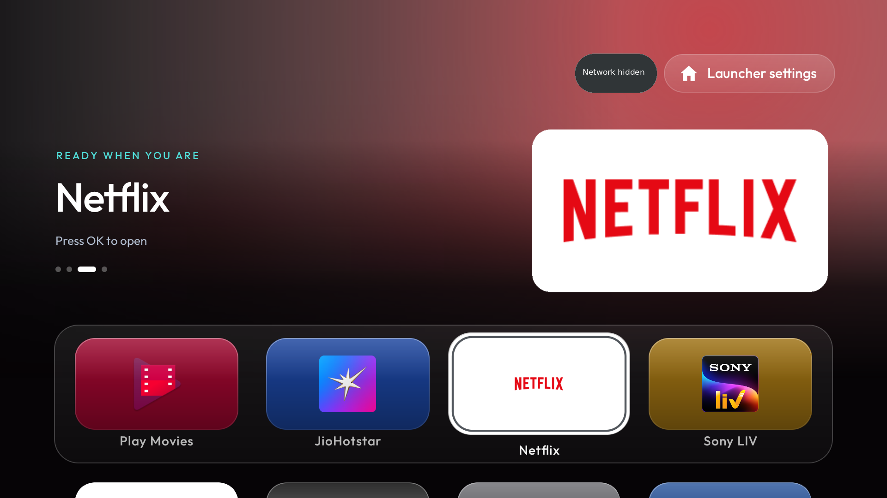
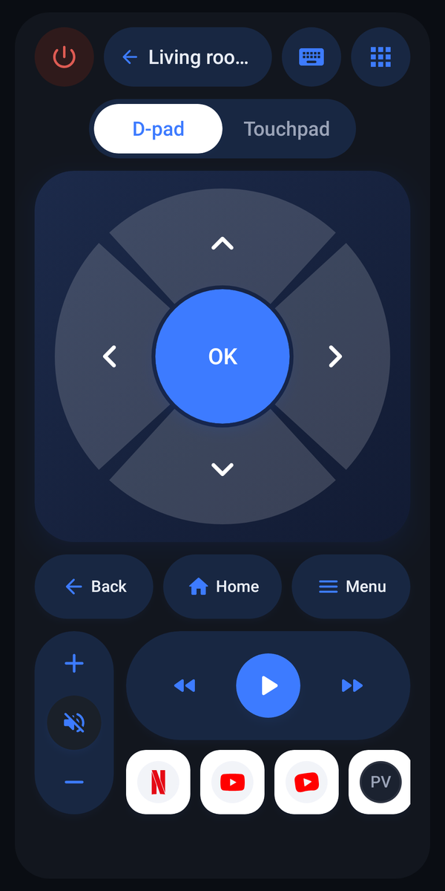
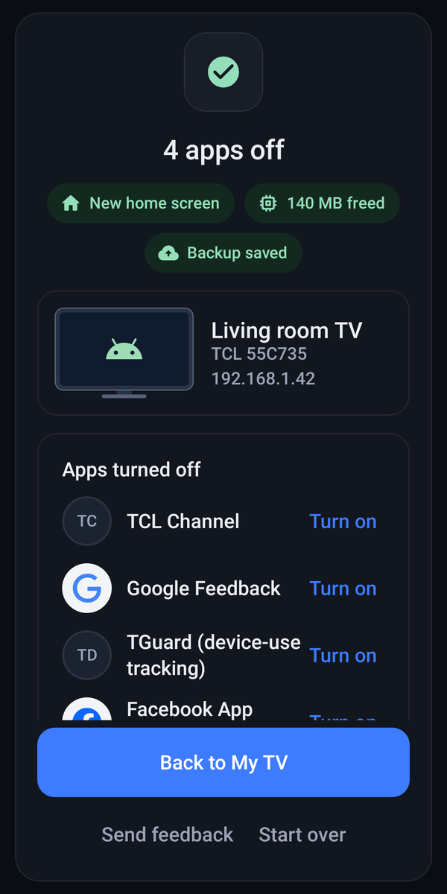
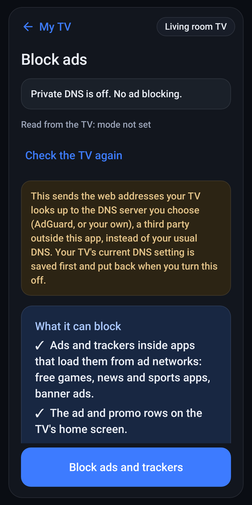
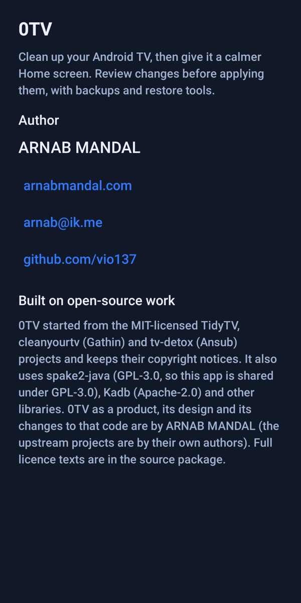
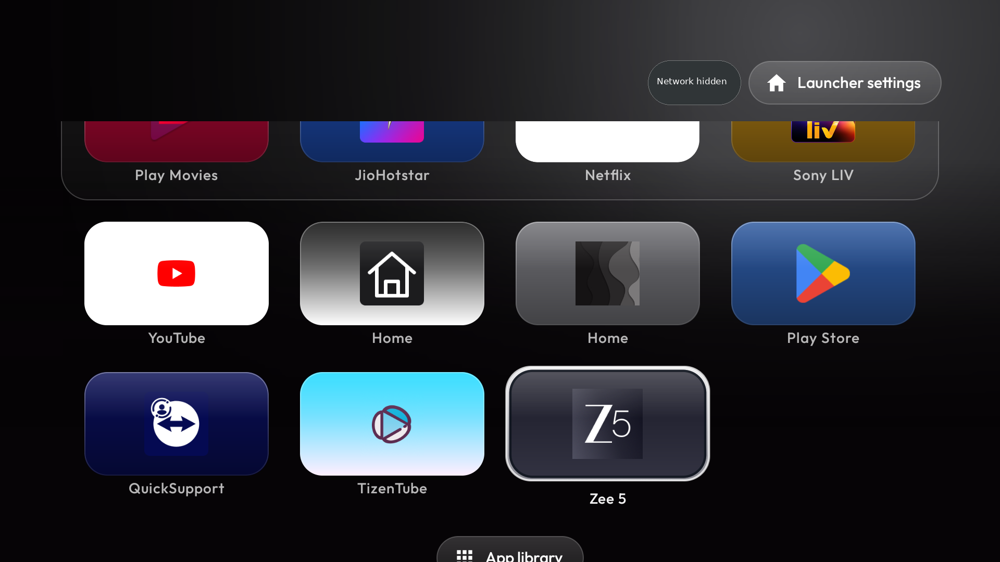

Connect, wirelessly.
Phone and TV on one network. Approve the prompt on the TV and 0TV links over wireless debugging - no laptop, no cable.
- Wireless debugging, no cable
- Pairing code flow built in
- Nothing leaves your network
Free & open source · Android 8+
The free phone app that tidies your Android TV. Review what came preloaded, save a backup, switch it off, and come home to a calmer screen.





What the phone app does
Phone and TV on one network. Approve the prompt on the TV and 0TV links over wireless debugging - no laptop, no cable.
Preloaded apps, grouped by what they do. A full backup is saved before anything moves.
Removal carries more risk than switching off.
Tidy up, send files, change the Home screen, install extras - every tool lives in one calm grid.
D-pad or touchpad, text input, app launching, file sending.
Key support depends on TV firmware.
Every cleanup starts from a saved backup, and restore sits on the done screen.
Permanently deleted app data cannot be recovered.
The whole app, really rendered



The bundled launcher
0TV Home gives your apps large banners and a clear focus ring. Flat and quiet in 1.1.0 - and it keeps working without the phone.
Version 1.1.0, on record
From download to a new Home
Keep the app installed so recovery history survives.
Optional tools, off by default
Points the TV's Private DNS at AdGuard (Android 9 or newer); off restores the saved setting.
Queries go to a third party; YouTube in-video ads stay.
Installs the open-source JioTV Go app from its GitHub releases, verified first.
You sign in with your Jio account.
An independent YouTube client, checked before sending.
Restore does not roll it back; unaffiliated with YouTube or TizenTube.
Copies an app from your phone to the TV.
Compatibility checked first; physical transfer unverified.
Plain answers
It reads the TV's real DNS setting and resolves names first. A review pass flags apps that returned after a TV update - not proven on every device.
No. Restore uses recorded backups; permanently deleted app data cannot be recovered.
Local ADB only; optional tools call out when chosen. The site itself runs no analytics.
Partially. Android TV and Google TV are the main targets, Fire TV support is partial, and Tizen and webOS TVs are not supported.
Nothing. 0TV is free and open source under GPL-3.0; individual components keep their own licences.
Your next Home starts here
SHA-256deffb01fe208371d8d7a12b2e27adb74eaeafa5122904dcff5a4dd8c70fd1683
Read the recovery limits before changing your TV; a download does not guarantee compatibility.